Colour can make intimate care feel easier to enter—or make it feel distant, generic and overly clinical.
Not “pink healthcare.”
A visual system that holds warmth, privacy and clinical confidence at the same time.
Building the visual language
The direction came from care moments—not a colour trend.
I moved from a broad emotional moodboard to a tighter image family, an illustration voice and an interface that could hold both reassurance and action.
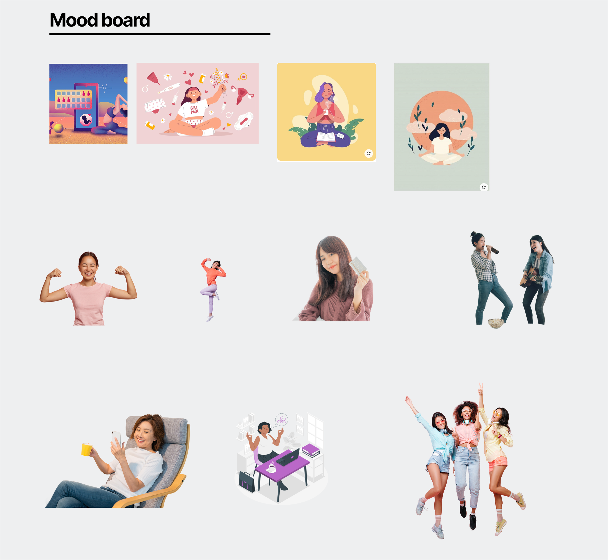
01 · Moodboard
Start with emotional range
Warmth, independence and everyday confidence created a wider starting point than familiar clinical or gender-coded imagery.
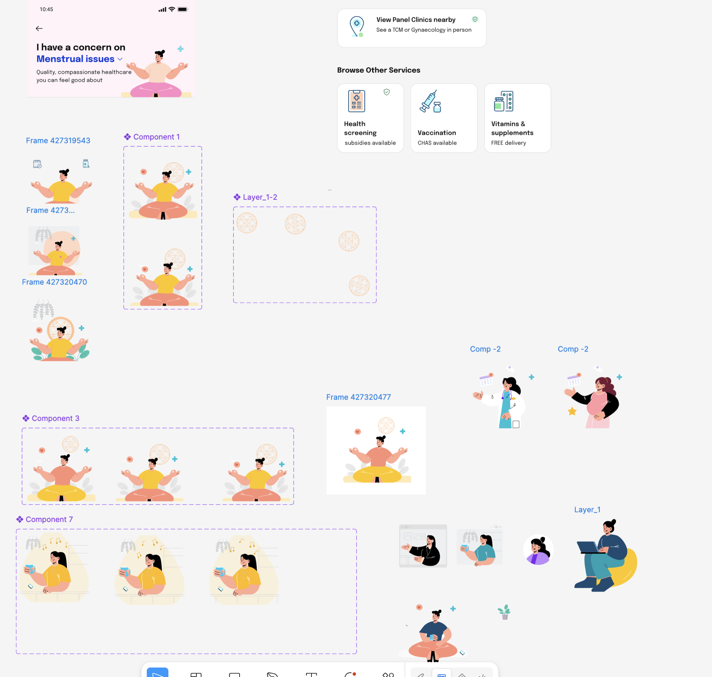
02 · Illustration studies
Find a human visual voice
Iterations helped remove decorative noise and retain gestures that communicate openness, support and agency.
03 · Early UI direction
Translate tone into product structure
The visual language became useful when it clarified pathways, softened dense care choices and kept actions unmistakable.
Closing the visual gap
From generic healthcare images to one recognisable world.
The existing service cards relied on repeated, generic imagery. I used Nano Banana to generate a controlled image family with the same warm clinical environment, casting, light and calm human tone across very different services.
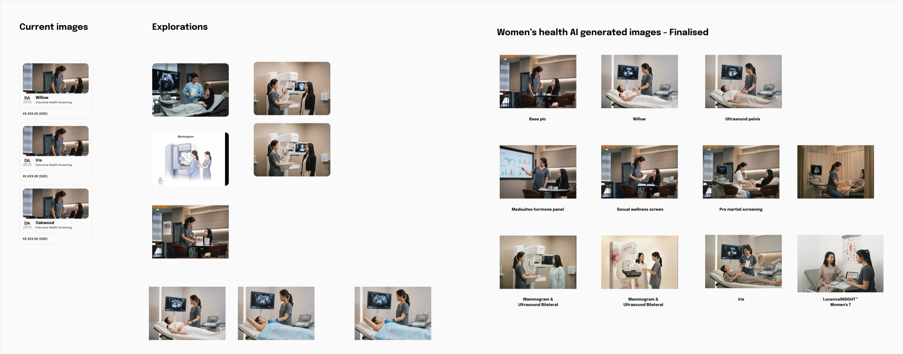
04 · Health-service imagery
Consistency became part of the product experience
The exploration moved from one repeated stock-like image to a purpose-built set for screening, sexual wellness, ultrasound and hormone care. Each scene stays distinct enough to explain the service, while still feeling like it belongs to the same trusted care system.
Why AI here? Not to make the care feel synthetic—to remove the visual inconsistency that made the experience feel generic.
Competitive analysis
I looked beyond healthcare to understand how people enter a complex category without feeling lost.
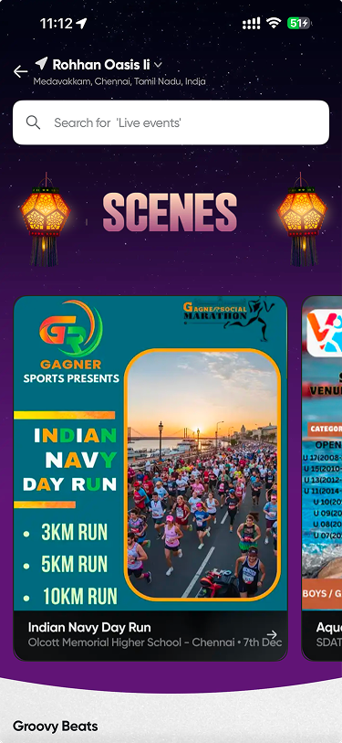
01 · Discovery-led experiences
Strong context creates an inviting entry.
What works
A clear visual world makes browsing feel guided.
Gap
The theme can overpower the task and reduce scanning clarity.
Opportunity
Use atmosphere to welcome, then let healthcare choices stay calm and direct.
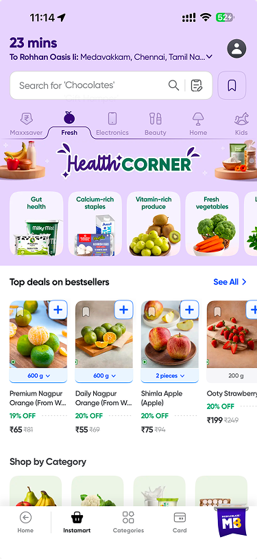
02 · Category-led commerce
Familiar groups reduce the effort of finding a starting point.
What works
Recognisable icons and categories support fast scanning.
Gap
Dense merchandising turns personal health into a wall of products.
Opportunity
Organise around needs and care moments, not inventory.
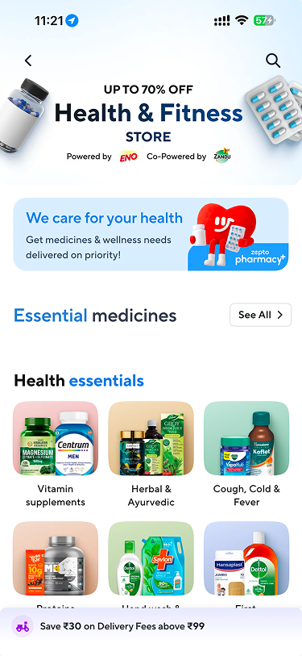
03 · Digital health storefronts
Functional hierarchy is clear, but care can feel transactional.
What works
Strong labels and repeated card patterns make the system legible.
Gap
Promotional urgency leaves little room for privacy or reassurance.
Opportunity
Keep the structure, soften the pressure and foreground the person.
What this changed
Lead with a human moment. Group care by recognisable needs. Reserve saturated colour for choices and progress—not decoration.
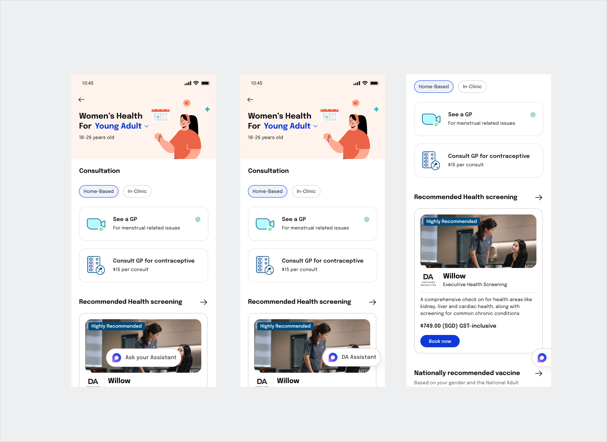
Direction applied
From reference patterns to a distinct care experience
The final UI keeps familiar category navigation, then replaces retail density with breathing room, clearer care pathways and a warmer human signal.
Palette lab
One product. Three emotional registers.
Warm enough to feel human. Strong enough to signal action.
Women’s health⋮
Care that meets you where you are.
Birth controlHormonal healthScreening
Art direction in the service of choice
A visual library for different moments of care.
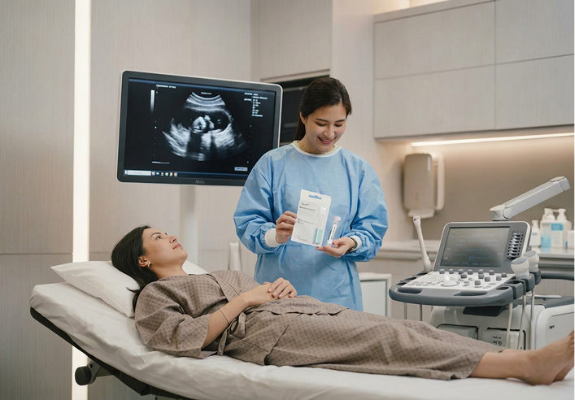
01People before equipment02Human, not generic03Private, not secretive
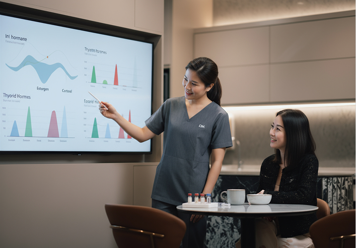
04Informative, not clinical
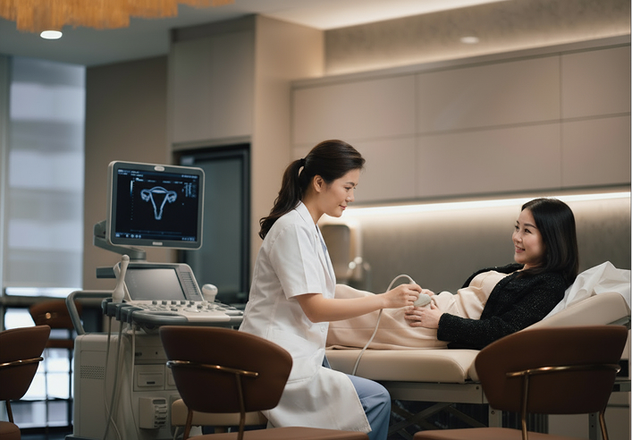
05Supportive, not prescriptive
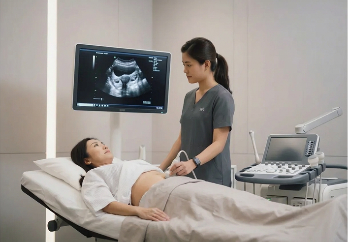
06Clear, not cold
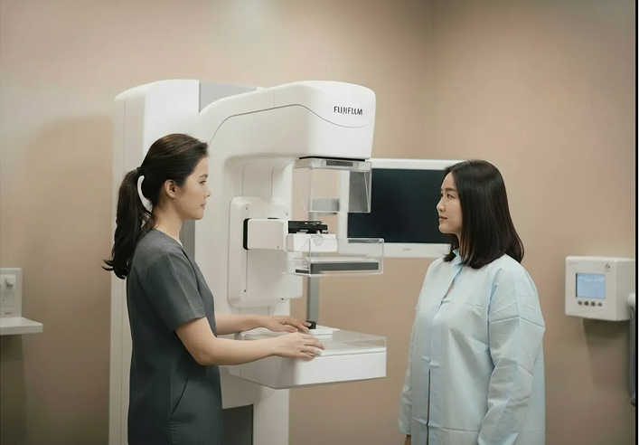
07Reassuring, not decorative
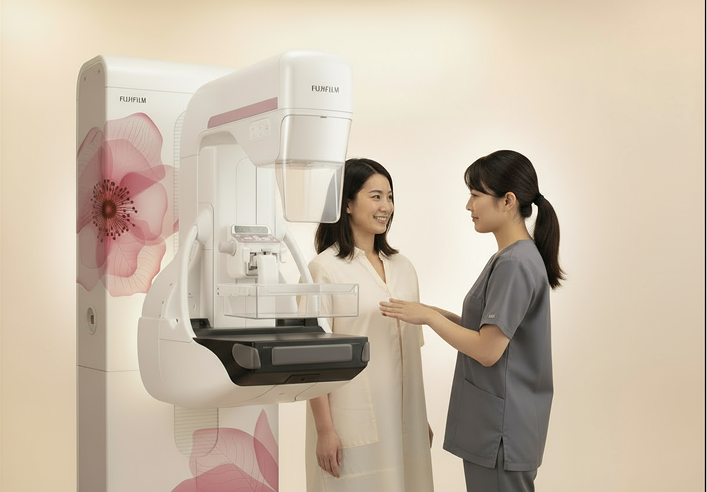
08Consistent across services
How the direction was decided
Start with the feeling a person needs before choosing the colour.
01
Name the emotional barrier
Privacy, fear, confusion and stigma require different visual responses.
02
Choose the human signal
Expression, distance, setting and eye line do more work than a decorative palette.
03
Build a repeatable family
Consistent light, contrast and cropping let varied services still feel like one product.
What colour is doing
01
Creates an entry point
A soft wash lowers the perceived weight of a sensitive topic without trivialising it.
02
Signals hierarchy
Saturated colour is reserved for decisions and next steps, not used as ambient decoration.
03
Protects trust
Deep, high-contrast text keeps the experience legible and clinically credible.
Key screens
Four categories, two iterations each.
The same Women’s health surface, shown as it evolved—from an early functional pass to a more considered, catalog-rich version.